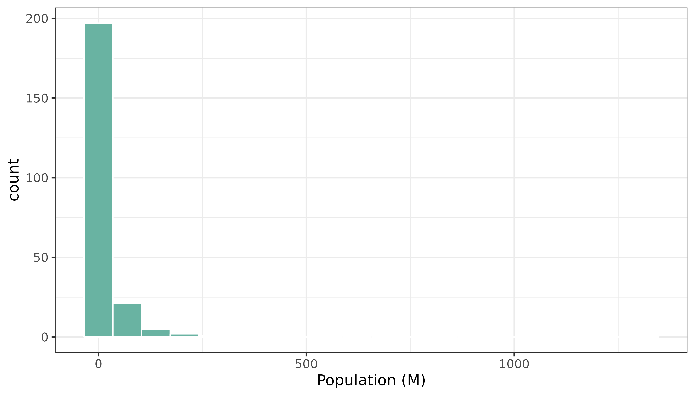

Related chart types

Map

Choropleth

Hexbin map

Cartogram

Connection

Bubble map
This post
explains how to build an interactive choropleth map with R and the
leaflet package. A tooltip is available for each region on
hover, and the map is zoomable.
leaflet is a R package allowing to build
interactive maps. If you’re not familiar to it, have a
look to this leaflet
introduction. This post is a step-by-step tutorial leading to the
following choropleth map.
Here is an example of what you can do with leaflet (try
to zoom in and out!):
Note: this step is described in detail here. Read it if you are not familiar with geospatial data management in R.
The region boundaries required to make maps are usually stored in geospatial objects. Those objects can come from shapefiles, geojson files or provided in a R package. See the background map section for possibilities.
This tutorial uses a geospatial object stored in a shape file available here. Start by downloading the file:
# Download the shapefile. (note that I store it in a folder called DATA. You have to change that if needed.)
download.file("http://thematicmapping.org/downloads/TM_WORLD_BORDERS_SIMPL-0.3.zip", destfile = "DATA/world_shape_file.zip")
# You now have it in your current working directory, have a look!
# Unzip this file. You can do it with R (as below), or clicking on the object you downloaded.
system("unzip DATA/world_shape_file.zip")
# -- > You now have 4 files. One of these files is a .shp file! (TM_WORLD_BORDERS_SIMPL-0.3.shp)And load it in R
# Read this shape file with the sf library.
library(sf)
world_sf <- read_sf(paste0(
getwd(), "/DATA/world_shape_file/",
"TM_WORLD_BORDERS_SIMPL-0.3.shp"
))
# Clean the data object
library(dplyr)
world_sf <- world_sf %>%
mutate(POP2005 = ifelse(POP2005 == 0, NA, round(POP2005 / 1000000, 2)))
# -- > Now you have a sf object (simple feature data frame). You can start doing maps!It is now possible to draw a first choropleth map. Here are the main steps to follow:
colorNumeric() functionleaflet(), addTiles() and
setView()addPolygons() to add the shape of all
country, with a color representing the number of people in the
country.The resulting map is quite disappointing: China and India having very numerous population, all the variation between other countries gets hard to observe on the map.
# Library
library(leaflet)
# Create a color palette for the map:
mypalette <- colorNumeric(
palette = "viridis", domain = world_sf$POP2005,
na.color = "transparent"
)
mypalette(c(45, 43))
# Basic choropleth with leaflet?
m <- leaflet(world_sf) %>%
addTiles() %>%
setView(lat = 10, lng = 0, zoom = 2) %>%
addPolygons(fillColor = ~ mypalette(POP2005), stroke = FALSE)
m
# save the widget in a html file if needed.
# library(htmlwidgets)
# saveWidget(m, file=paste0( getwd(), "/HtmlWidget/choroplethLeaflet1.html"))In a choropleth map, each region has a color that represents the value of a numeric variable (population here).
It is a good practice to check the distribution of this variable to understand what kind of color scale should be used. Using a histogram is often a good option for that:

There are several ways to translate a numeric variable to a palette of color. Leaflet offers 3 options:
colorQuantilecolorNumericcolorBinResults can be very different and the best option usually depends on the distribution of your input data.
Quantile
# Color by quantile
m <- leaflet(world_sf) %>%
addTiles() %>%
setView(lat = 10, lng = 0, zoom = 2) %>%
addPolygons(
stroke = FALSE, fillOpacity = 0.5,
smoothFactor = 0.5, color = ~ colorQuantile("YlOrRd", POP2005)(POP2005)
)
m
# # save the widget in a html file if needed.
# htmlwidgets::saveWidget(m, file=paste0( getwd(), "/HtmlWidget/choroplethLeaflet2.html"))Numeric
# Numeric palette
m <- leaflet(world_sf) %>%
addTiles() %>%
setView(lat = 10, lng = 0, zoom = 2) %>%
addPolygons(
stroke = FALSE, fillOpacity = 0.5, smoothFactor = 0.5,
color = ~ colorNumeric("YlOrRd", POP2005)(POP2005)
)
m
# htmlwidgets::saveWidget(m, file=paste0( getwd(), "/HtmlWidget/choroplethLeaflet3.html"))Bins
# Bin
m <- leaflet(world_sf) %>%
addTiles() %>%
setView(lat = 10, lng = 0, zoom = 2) %>%
addPolygons(
stroke = FALSE, fillOpacity = 0.5, smoothFactor = 0.5,
color = ~ colorBin("YlOrRd", POP2005)(POP2005)
)
m
# htmlwidgets::saveWidget(m, file=paste0( getwd(), "/HtmlWidget/choroplethLeaflet4.html"))We easily see here that for this use case, the quantile option creates the best map.
In order to get a quality choropleth map, there are several improvements we need to apply:
addLegend()labelOptions. When you hover a
specific region, a box appears with custom text. This is very handy to
add additional information to your map.Here is the result and the code:
# Create a color palette with handmade bins.
library(RColorBrewer)
mybins <- c(0, 10, 20, 50, 100, 500, Inf)
mypalette <- colorBin(
palette = "YlOrBr", domain = world_sf$POP2005,
na.color = "transparent", bins = mybins
)
# Prepare the text for tooltips:
mytext <- paste(
"Country: ", world_sf$NAME, "<br/>",
"Area: ", world_sf$AREA, "<br/>",
"Population: ", round(world_sf$POP2005, 2),
sep = ""
) %>%
lapply(htmltools::HTML)
# Final Map
m <- leaflet(world_sf) %>%
addTiles() %>%
setView(lat = 10, lng = 0, zoom = 2) %>%
addPolygons(
fillColor = ~ mypalette(POP2005),
stroke = TRUE,
fillOpacity = 0.9,
color = "white",
weight = 0.3,
label = mytext,
labelOptions = labelOptions(
style = list("font-weight" = "normal", padding = "3px 8px"),
textsize = "13px",
direction = "auto"
)
) %>%
addLegend(
pal = mypalette, values = ~POP2005, opacity = 0.9,
title = "Population (M)", position = "bottomleft"
)
m
# save the widget in a html file if needed.
# htmlwidgets::saveWidget(m, file=paste0( getwd(), "/HtmlWidget/choroplethLeaflet5.html"))This post explains how to build a basic choropleth map with R and the leaflet package.
You might be interested in how to create a choropleth map in ggplot2, and more generally in the choropleth section.
Related chart types